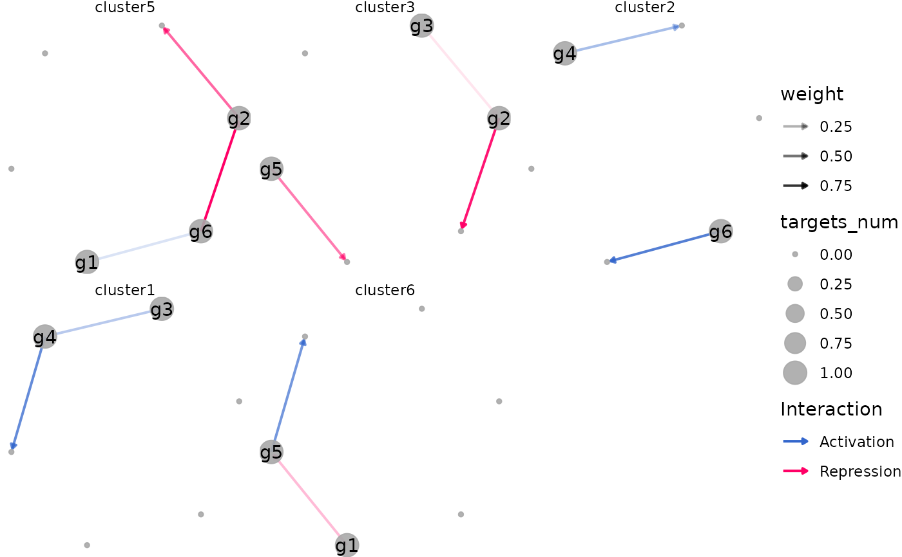
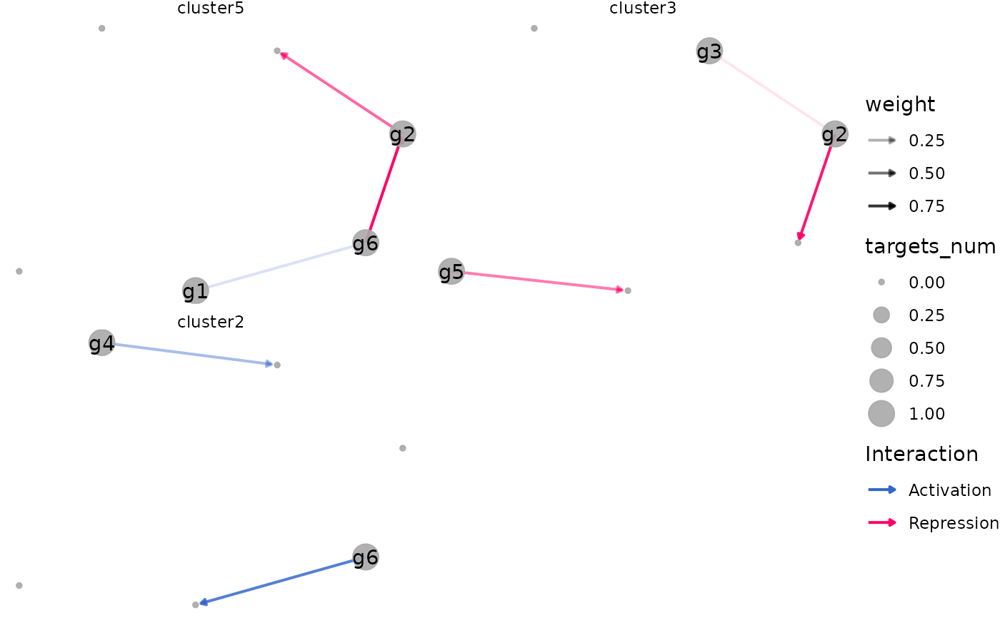

Plot dynamic networks
Usage
plot_dynamic_networks(object, ...)
# S4 method for class 'Seurat'
plot_dynamic_networks(
object,
network = NULL,
celltypes = NULL,
weight_cutoff = NULL,
celltypes_order = NULL,
ntop = 10,
filter_by_ntop = TRUE,
...
)
# S4 method for class 'CSNObject'
plot_dynamic_networks(object, ...)
# S4 method for class 'data.frame'
plot_dynamic_networks(
object,
celltypes_order = NULL,
ntop = 10,
filter_by_ntop = TRUE,
title = NULL,
theme_type = "theme_void",
plot_type = "ggplot",
layout = "fruchtermanreingold",
nrow = 2,
ncol = NULL,
byrow = TRUE,
combine = TRUE,
figure_save = FALSE,
figure_name = NULL,
figure_width = 6,
figure_height = 6,
seed = 1
)Arguments
- object
Data.frame with columns regulator, target, weight, celltype.
- ...
Arguments passed to methods.
- network
Name of the network; default uses
DefaultNetwork(object).- celltypes
Character vector of states/cell types;
NULLfor all.- weight_cutoff
Numeric threshold for edge weight filtering.
- celltypes_order
The order of cell types.
- ntop
The number of top regulators to show (labels and edge filtering). When
filter_by_ntop=TRUE, only edges from topntopregulators are plotted to avoid huge networks. Default is `10`.- filter_by_ntop
Logical. If
TRUE(default), filter edges to topntopregulators per celltype.- title
The title of figure. Default is `NULL`.
- theme_type
The theme of figure. Could be `"theme_void"`, `"theme_blank"`, or `"theme_facet"`. Default is `"theme_void"`.
- plot_type
The type of figure. Could be `"ggplot"`, `"animate"`, or `"ggplotly"`. Default is `"ggplot"`.
- layout
The layout of figure. Could be `"fruchtermanreingold"` or `"kamadakawai"`. Default is `"fruchtermanreingold"`.
- nrow
The number of rows of figure (for
facet_wrapwhencombine=TRUE). Default is `2`.- ncol
Integer or
NULL. Number of columns forfacet_wrap.- byrow
Logical. If
TRUE, fill facets by row (as.table=TRUEinfacet_wrap).- combine
Logical. If
TRUE(default), return a single faceted plot; ifFALSE, return a named list of plots per celltype.- figure_save
Whether to save the figure file. Default is `FALSE`.
- figure_name
The name of figure file. Default is `NULL`.
- figure_width
The width of figure. Default is `6`.
- figure_height
The height of figure. Default is `6`.
- seed
The seed random use to plot network. Default is `1`.
Examples
data(example_matrix, package = "inferCSN")
network <- inferCSN::inferCSN(example_matrix, verbose = FALSE)
network$celltype <- rep(
c("cluster5", "cluster3", "cluster2", "cluster1", "cluster6"),
length.out = nrow(network)
)
celltypes_order <- c(
"cluster5", "cluster3",
"cluster2", "cluster1",
"cluster6"
)
plot_dynamic_networks(
network,
celltypes_order = celltypes_order
)

plot_dynamic_networks(
network,
celltypes_order = celltypes_order[1:3]
)

plot_dynamic_networks(
network,
celltypes_order = celltypes_order,
plot_type = "ggplotly"
)